美化 jEdit 操作環境
儘管 jEdit 的文字編輯能力非常強，但剛開始的外觀實在太醜了：
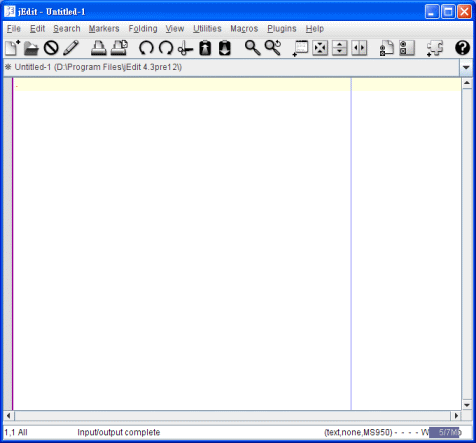
不過，只要經過細心打扮，還是可以變成這樣：
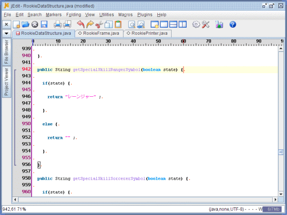
感覺清新脫俗許多。
本單元將一步步改造 jEdit 外觀，讓 jEdit 成為又強又討喜的文字編輯器！
第一節：增益模組的管理設定
要美化 jEdit 的操作環境，很多要靠下載由第三方所幫忙設計的增益模組 (Plug-in) 來完成，因此當你第一次使用 jEdit，建議首先第一件要做的事情是設定增益模組。
步驟 1
在功能表選擇 Utilities → Global Options：
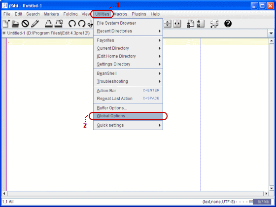
步驟 2
在彈出的 Options 視窗中，於左邊樹狀列表點選 Plugin Manager，好讓右邊切換至可以設定增益模組的操作介面：
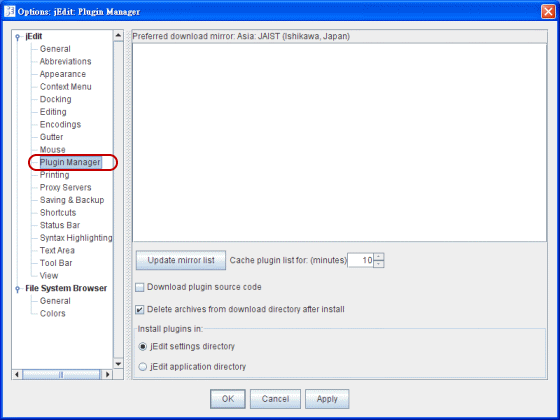
步驟 3
接著請先確認 jEdit settings directory 是否圈選，這可以讓所有對於 jEdit 的設定通通存放在使用者資料夾裡面，而不是存放在 jEdit 應用程式所在的資料夾裡面。這樣的好處是以後下載更新版本時，可以繼續共用同一設定狀態，不用每次更新就得重新設定一次。包括你所下載的增益模組也一樣會存放在使用者資料夾。[1]
然後按下 Update mirror list 鈕，jEdit 會開始尋找全球網路可供下載增益模組的站點。
最後挑一個離你國家最近的站點試試，我這裡選擇 Asia: JAIST (Ishikawa, Japan)。當你以後下載增益模組總是斷線或找不到檔案時，可以回到這個地方另外挑選一個站點再試試。
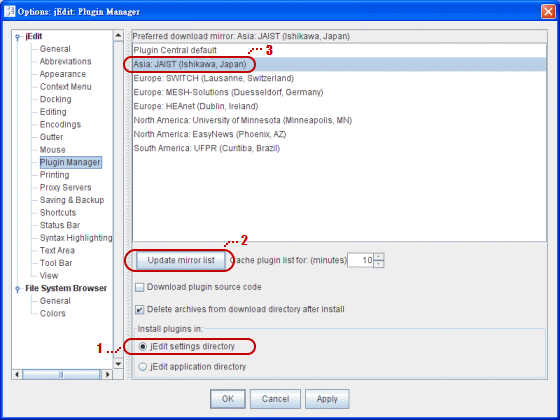
第二節：使用頁籤式的分頁管理器 BufferTabs
jEdit 預設的分頁管理器是用下拉式清單來設計，想切換不同樣文件時要點開清單才能挑選，並不是很方便。
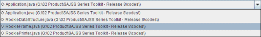
分頁管理最好還是用頁籤的設計比較方便！看要切換哪個文件，把滑鼠移到該頁籤上面，然後按下去就 OK 了。底下將介紹如何取得並掛載頁籤模組。
步驟 1
選擇功能表的 Utilities → Global Options：
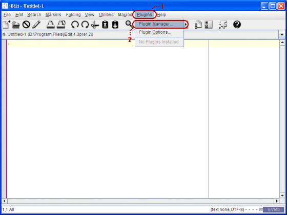
步驟 2
出現 Plugin Manager 視窗：
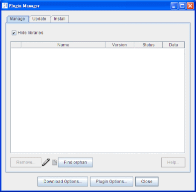
步驟 3
點選 Install 分頁，畫面會切換到可供挑選數十種增益模組的清單：
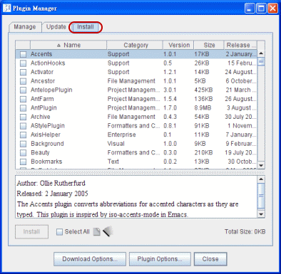
步驟 4
勾選 BufferTabs，然後按 Install 鈕：
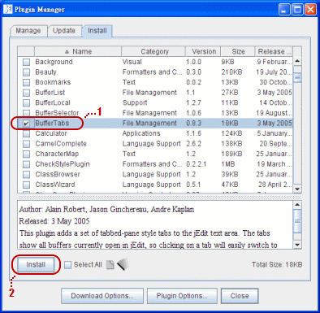
步驟 5
下載進度會同步顯示於進度視窗，請稍待： 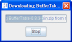
下載完成後，按 Close 鈕離開：
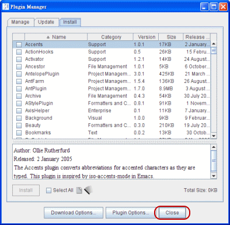
步驟 6
下載回來的增益模組要開啟才會顯示出來，不過在開啟 BufferTabs 之前，建議先關掉 jEdit 預設的分頁管理器 [2]。請選擇功能表的 Utilities → Global Options：
步驟 7
在彈出的 Options 視窗中，點選左邊樹狀列表的 View，然後取消右邊 Show buffer switcher 的勾選：
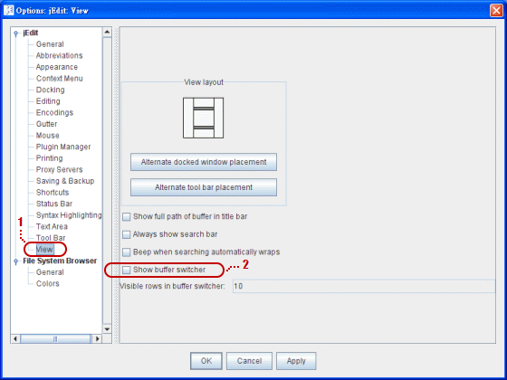
完成後按 OK 儲存設定並且離開。
步驟 8
仔細看可以發現 jEdit 上方原來的下拉式清單消失了，這表示已成功關閉預設的分頁管理器：
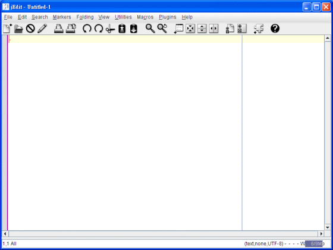
步驟 9
接著要開啟 BufferTabs 分頁管理器。請選擇功能表的 Plugins，再選擇 BufferTabs 來勾選它：
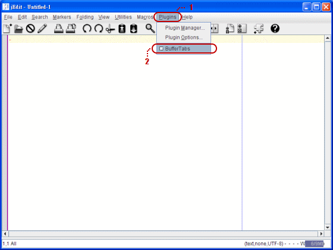
步驟 10
頁籤式的分頁出現在畫面左上角，表示順利啟用 BufferTabs 增益模組：
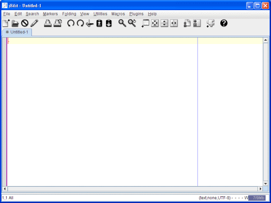
但是這種啟動 BufferTabs 的方法，每次重新開啟 jEdit 時都得再重複一次勾選的動作，所以不是很理想。因此請繼續以下的步驟。
步驟 11
選擇功能表 Plugins → Plugin Options：
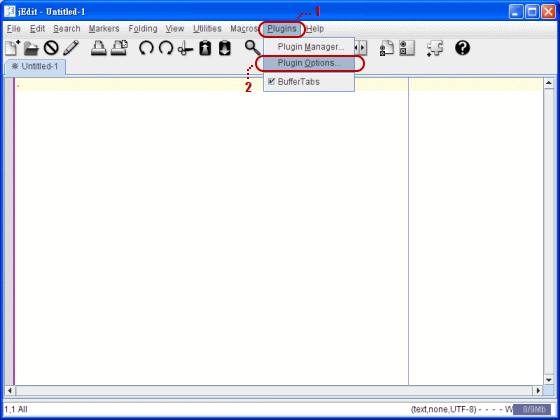
步驟 12
在出現的 Options 視窗，勾選 Enable BufferTabs by default。這個選項會在每次重新進入 jEdit 時同步啟用 BufferTabs 頁籤：
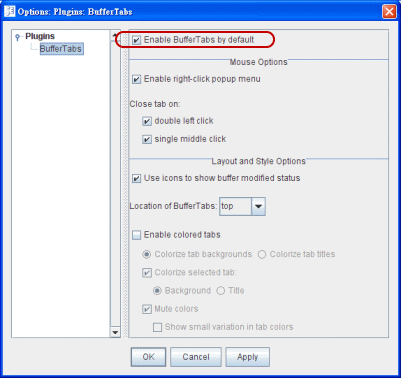
完成後按 OK 儲存設定並且離開。
第三節：使用 Java Swing 視窗外觀
jEdit 是使用 Java 寫出來的應用軟體，透過設定可以讓 jEdit 使用 Java 特有的視窗樣式，一舉提升 jEdit 的氣質。
步驟 1
選擇功能表的 Utilities → Global Options：
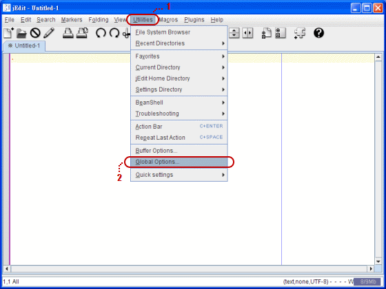
步驟 2
於左邊樹狀列表點選 Apperance，然後將 Swing look & fell 設定為 Metal，接著勾選 Draw window borders using Swing look & feel 與 Draw dialog box borders using Swing look & feel 兩個選項：
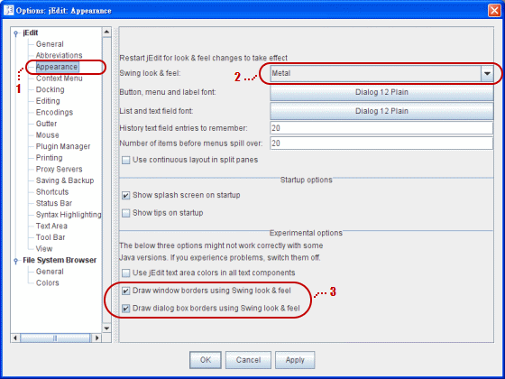
完成後按 OK 儲存設定並且離開。
步驟 3
這項設定必須重新啟動 jEdit 才能載入效果，因此請關閉 jEdit 然後再執行一次。
步驟 4
視窗外觀變得如下，感覺氣質許多：
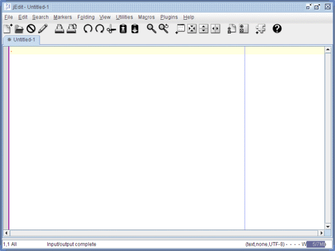
第四節：下載更美觀一點的工具列圖示
jEdit 預設的工具列圖示看起來有點死氣沉沉，所幸 jEdit 社群提供幾款工具列圖示，建議挑選幾個下載回來試試有沒有符合你胃口的款式。
步驟 1
請至 jEdit 社群網站下載工具列圖示，網址是：
http://community.jedit.org/?q=filestore/browse/23
步驟 2
我這裡選擇 jEdit GTK Icons，下載的檔案如下：
然後將下載回來的檔案存放到 Java Runtime Environment (JRE) 安裝路徑的 lib → ext 資料夾裡面。如果你不清楚 JRE 的安裝路徑，請參考類似如下的預設安裝路徑 C:\Program Files\Java\jre1.6.0_01\lib\ext 是否存在。
步驟 3
重新啟動 jEdit 才能載入效果，請關閉 jEdit 然後再執行一次。
選用 jEdit GTK Icons 的話，會連開頭畫面都翻新哦：
步驟 4
進入 jEdit 後，可以看到工具列圖示比原來的有生氣多了：
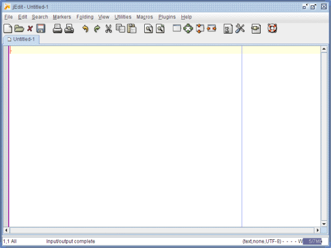
第五節：開啟檔案瀏覽器
jEdit 提供了幾個側邊欄位的工具可供使用，不過預設上都沒有開啟。其中一個叫做 File Browser 檔案瀏覽器，可以讓你直接在 jEdit 環境開啟資料夾裡面的文件來編輯，相當好用。
底下為你介紹如何開啟側邊欄位工具 File Browser。
步驟 1
選擇功能表的 Utilities → Global Options：
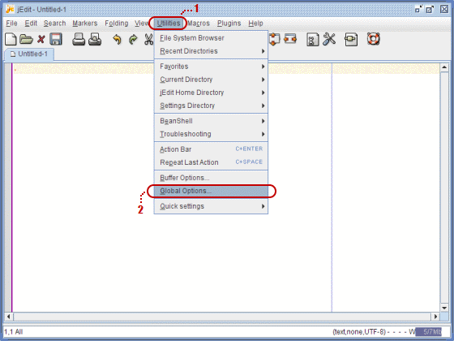
步驟 2
於左邊樹狀列表點選 Docking，然後找一下 File Bowser 這個欄位，將它的 Docking position 調整為 left：
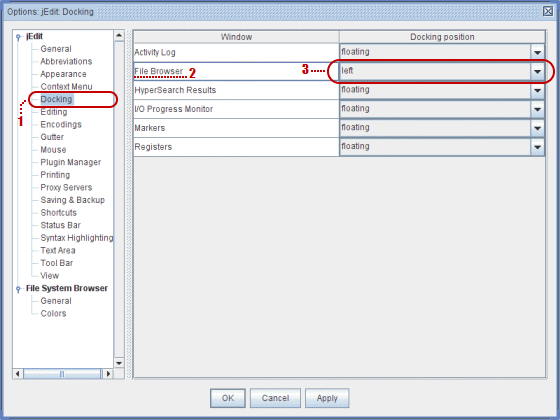
完成動作按 OK 儲存設定並離開。
步驟 3
左邊出現側邊工具欄，裡面有 File Browser 可以使用：
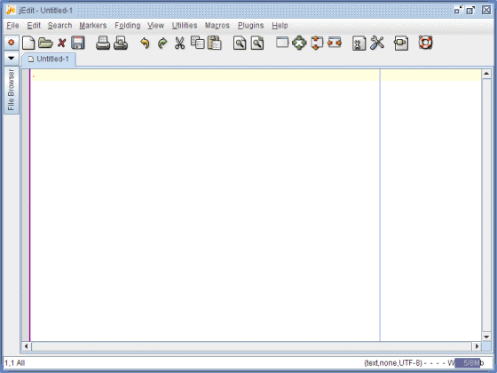
步驟 4
你可用點擊按鈕的方式展開列於側邊工具欄裡面的項目，底下是 File Browser 展開的模樣，可以讓你切換硬碟、選擇資料夾、開啟文件、以及更多控制功能輔助你開啟文件：
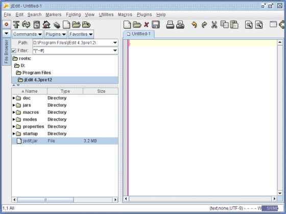
第六節：行數與尺規
最後一個美化外觀的設定項目是行數與尺規。
文字編輯器畢竟不像整合式開發軟體提供編譯與除錯的機能，因此使用 jEdit 撰寫程式在除錯時最常用到的線索就是行號。像底下就是編譯 Java 程式時發出的錯誤訊息，它通知我 JapanessBirthplace.java 原始碼文件的第 124 行出現 cannot find symbol 的錯誤：
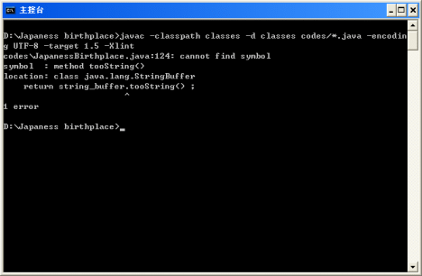
這時只要回到 jEdit 找開啟的 JapanessBirthplace.java 文件，尋找第 124 行數檢查問題出在哪即可。
某些編譯器甚至會提供某行數的第幾個字元出現問題的訊息，因此尺規也是建議掛載使用的。
步驟 1
選擇功能表的 Utilities → Global Options：
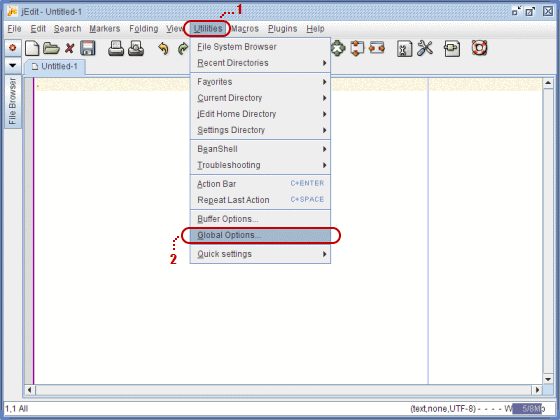
步驟 2
於左邊樹狀列表點選 Gutter，然後勾選 Line numbering：
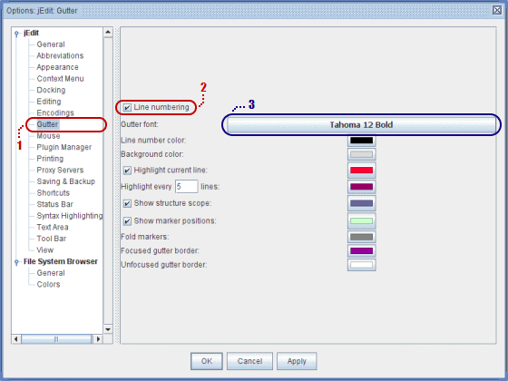
圖中以藍色另外標記的 3 號部份，是用來設定行數的字體與大小。我在 Windows XP 作業系統使用 jEdit 時偏好 Tahoma 字體，使用 12 大小和粗體樣式。
步驟 3
行數就這麼簡單顯示出來了：
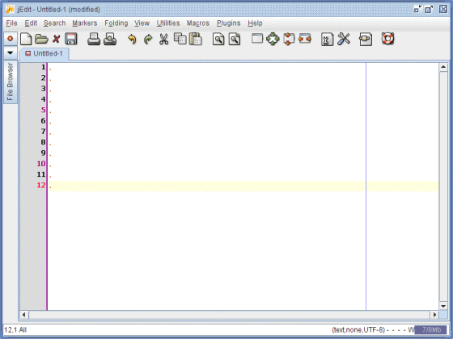
步驟 4
接著是尺規。必須下載第三方開發的增益模組，請選擇功能表的 Plugins → Plugin Manager：
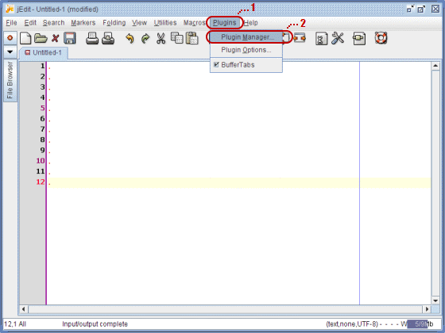
步驟 5
在出現的 Plugin Manager 視窗中切換到 Install 分頁，然後挑選 ColumnRuler 並安裝它：
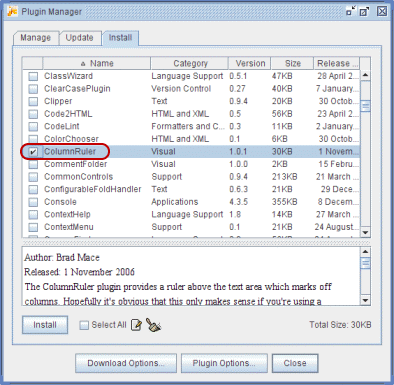
下載完畢後按 Close 鈕離開。
步驟 6
選擇功能表的 Plugins，然後按 Column Ruler 即可勾選它：
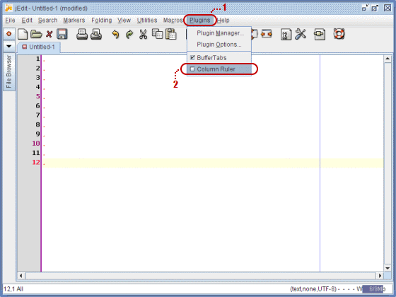
步驟 7
勾選了 Column Ruler 就能在 jEdit 上方部份看見尺規：
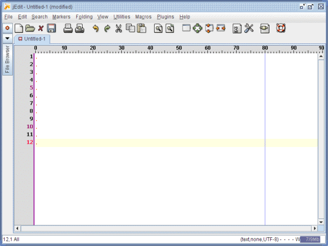
但是這種啟動 Column Ruler 的方法，在每次重新開啟 jEdit 時，得還要重複一次勾選的動作，所以不是很理想。因此請繼續以下的步驟。
步驟 8
選擇功能表 Plugins → Plugin Options：
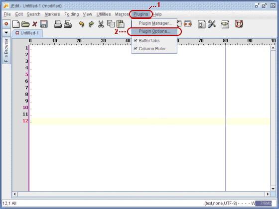
步驟 9
在出現的 Options 視窗，於左邊的樹狀清單展開 Column Ruler 選擇底下的 Ruler，然後勾選 Active by default：
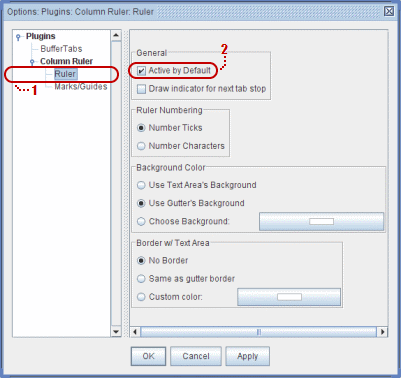
完成後按 OK 儲存設定並且離開，以後每次執行 jEdit 會自動掛載 Column Ruler。